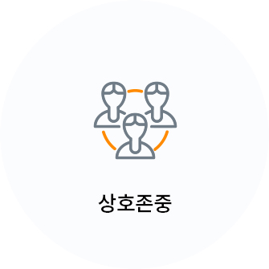

<!DOCTYPE html>
<html lang="ko">
<head>
    <meta charset="UTF-8">
    <meta http-equiv="Content-Script-Type" content="text/javascript">
    <meta http-equiv="Content-Style-Type" content="text/css">
    <meta name="viewport" content="width=device-width,initial-scale=1.0,minimum-scale=1.0,maximum-scale=1.0,user-scalable=no">
    <meta http-equiv="X-UA-Compatible" content="ie=edge">
    <title></title>
    
    <link rel="stylesheet" href="../../css/common.css">
    <link rel="stylesheet" href="../../css/style.css">
    <!-- Scripts -->
    <script src="../../js/jquery-2.2.3.min.js"></script>
    <script src="../../js/jquery-ui.js"></script>
</head>
<body>
<div class="wrap">

    <div class="content">
        <div class="section">
            <div class="title">
                <h3 class="page-tit">	병원소개</h3>
                <p class="page-tit__desc">병원 외래방문 시 필요한 정보를 알 수 있습니다.</p>
            </div>

            <ul class="tab">
                <li><a href="gp060901.html">병원장 인사말</a></li>
                <li><a href="gp060902.html" class="on">Mission & Vision</a></li>
                <li><a href="gp060903.html">병원 정보</a></li>
                <li><a href="gp060904.html">병원 연혁</a></li>
                <li><a href="gp060905.html">의료 성과</a></li>
            </ul>

            
            <div class="context introduce-box">
                <div class="tab_sub_dep2">
                    <ul>
                        <li><a href="#vision">Vison</a></li>
                        <li><a href="#mission">Mission</a></li>
                    </ul>
                    <div id="vision">     
                        <div class="front" style="background:url(../../img/bg/bg_vision.jpg) no-repeat 50% 0"></div>                   
                        <div class="introduce-tab-contents">
                            <ul class="vision-list">
                                <li>
                                    
                                    <p>인간생명에 대한 경외심을 <br>최우선 가치로 한다.</p>
                                </li>
                                <li>
                                    
                                    <p>고객은 우리의 존재이유이며<br>최상의 진료서비스를 제공한다.</p>
                                </li>
                                <li>
                                    
                                    <p>인간사랑을 행동으로 <br>실천하여 사회에 봉사한다.</p>
                                </li>
                                <li>
                                    
                                    <p>연구를 통해 건강한 <br>생명의 연장에 기여한다.</p>
                                <li>
                                    
                                    <p>서로 존중하며 구성원 모두가 <br>최선의 긍지와 자부심을 갖는다. </p>
                                </li>
                                <li>
                                    
                                    <p>끊임없는 자기혁신을 통해 <br>경쟁력을 지속적으로 유지한다.</p>
                                </li>
                            </ul>
                            <p class="strong-text">최상의 진료와 첨단 연구로 신뢰와 존경받는<br><strong class="txt-co-blue">21세기 최고의 고객만족병원</strong>을 이룩한다.</p>
                        </div>
                    </div>

                    <div id="mission">               
                        <div class="front front-mission" style="background:url(../../img/bg/bg_mission.jpg) no-repeat 50% 0">
                            <span class="title">가천길재단 설립이념</span>
                            <p class="title-desc">가천길재단은 공익을 위해 헌신하고, 어렵고 고통 받는 사람들을 돌보는 사회적 책임을 다하며, <br>국민을 행복하게 하는 나라사랑을 실천합니다.박애, 봉사, 애국은 세월이 흘러도 변치 않을 가천길재단의 설립 정신입니다.</p>
                        </div>                 
                        <div class="introduce-tab-contents">
                            <ul class="missin-list">
                                <li>
                                    
                                    <span class="title txt-co-blue">그늘진 곳, 소외된 삶들을 보살핍니다.</span>
                                    <p class="text">보증금 없는 병원, 새생명 찾아주기 운동<br>해외 심장병 어린이 무료수술, 의료 취약지 병원 운영 등으로 어려운 환경의 위태로운 생명을 사랑으로 돌봅니다. 낮은데,  외딴 삶들을 외면하지 않는 것이 <Br>길병원 정신입니다.</p>
                                </li>
                                <li>
                                    
                                    <span class="title txt-co-yellow">손을 비워서 마음을 채우면 행복합니다.</span>
                                    <p class="text">봉사와 나눔이야말로 선진사회의 '소금'입니다.<br>가천미추홀청소년봉사단의 씩씩한 기상. '심청효행대상'에 빛나는 고결한 효성은 세상을 <br>밝히는 마음의 등불입니다. 가천문화재단과 <br>가천박물관이 베푸는 문화 나눔이 훈훈하고 <br>격조 높은 21세기 문화 코리아를 열어갑니다.</p>
                                </li>
                                <li>
                                    
                                    <span class="title txt-co-green">인재양성이 나라사랑의 시작이자 끝입니다.</span>
                                    <p class="text">사람이 바로 그 공동체의 미래입니다. <br>글로벌 리더를 배출하고, 의료인재를 가꾸어 내는 꿈이 가천대학교의 글로벌, 메디컬 <br>이 두 캠퍼스에 담겨있습니다. 기초과학을 연구하는 '가천뇌과학연구원', '이길여 암·당뇨연구원'은 <br>21세기 초일류 코리아의 디딤돌입니다.</p>
                                </li>
                            </ul>
                        </div>
                    </div>
                </div>
            </div>
        </div>
    </div>

</div>
<script>
$(function() {
	$(".tab_sub_dep2").tabs();
});
</script>
<script src="../../js/ui.js"></script>
</body>
</html>
